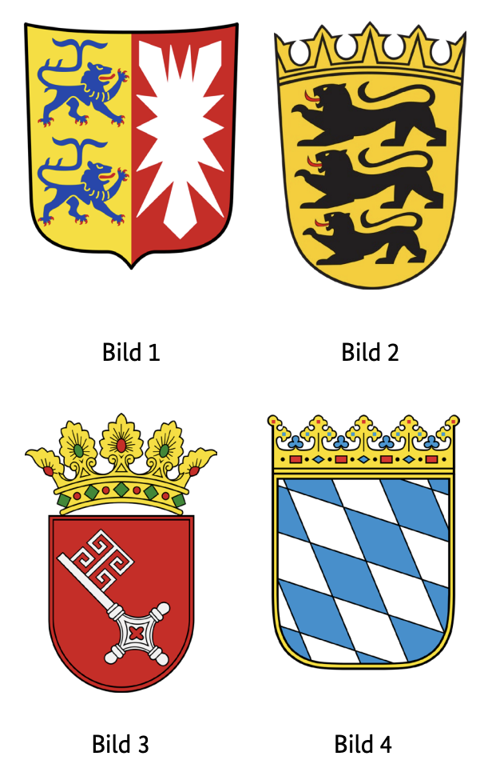
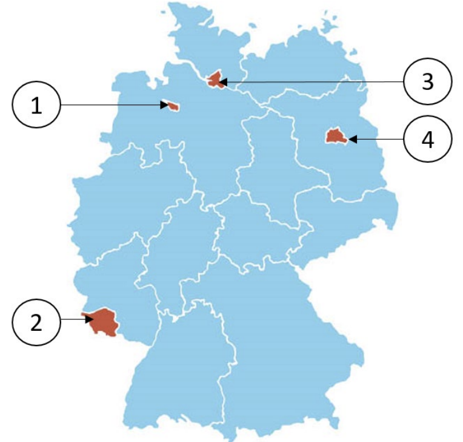

Resmi BAMF soru havuzundaki 10 Bremen (HB) eyalet sorusunun Almanca ve Türkçe açıklamalı interaktif çözümleri. Soru üzerine tıklayarak bilginizi anında test edin.
Almanya vatandaşlık ve kalıcı oturum için yapılan Leben in Deutschland (LiD) sınavında adaya toplam 33 çoktan seçmeli soru sorulur:
30 Genel Soru: Demokrasi, hukuk, tarih ve toplumsal yaşam (300 genel soru havuzundan).
3 Eyalet Sorusu: İkamet ettiğiniz eyalete özel tarih, coğrafya ve anayasa soruları (Aşağıdaki 10 eyalet sorusu havuzundan).
Sınavı geçmek için 33 sorudan en az 15 doğru (Vatandaşlık şartı) veya 17 doğru (Oryantasyon kursu başarı sertifikası) yapmanız gerekmektedir.
📝 10 Resmi Bremen Sorusunu Çözün
Soru #341 (1 / 10)Federal Eyalet: Bremen
Welches Wappen gehört zur Freien Hansestadt Bremen?
TR: Hangi arma Bremen'in Özgür Hansa Şehri'ne aittir?

✅ Doğru Cevap: Şık C (Bild 3)
Soru, Alman ulusal armaları hakkında bilgi sahibiyle ilgilidir. Görevde, birkaç numaralı arma sunulur; bunlardan biri Bremen'in Özgür Hansa Şehri'nin resmi armasını gösterir. Doğru cevabı bulmak için Bremen armasının nasıl göründüğünü ve içinde hangi tarihi sembolleri barındırdığını bilmeniz gerekir. Sonra bu bilgiyi gösterilen 1'den 4'e kadar olan seçeneklerle karşılaştırın ve uygun sayıyı seçin.
Die Frage bezieht sich auf die Kenntnis deutscher Landeswappen. In der Aufgabe werden mehrere nummerierte Wappen dargestellt, von denen eines das offizielle Wappen der Freien Hansestadt Bremen zeigt. Um die richtige Antwort zu finden, sollte man wissen, wie das Bremer Wappen aussieht und welche historischen Symbole es enthält. Anschließend vergleicht man dieses Wissen mit den abgebildeten Optionen 1 bis 4 und wählt die passende Nummer aus.
The question refers to the knowledge of German national coats of arms. In the task, several numbered coats of arms are presented, one of which shows the official coat of arms of the Free Hanseatic City of Bremen. To find the right answer, you should know what the Bremen coat of arms looks like and what historical symbols it contains. Then compare this knowledge with the options 1 to 4 shown and select the appropriate number.
السؤال يتعلق بمعرفة شعارات النبالة الوطنية الألمانية. في المهمة، تعرض عدة شعارات مرقمة، أحدها يظهر الشعار الرسمي لمدينة بريمن الهانزية الحرة. لإيجاد الإجابة الصحيحة، يجب أن تعرف كيف يبدو شعار بريمن وما هي الرموز التاريخية التي يحتويه. ثم قارن هذه المعرفة مع الخيارات من 1 إلى 4 المعروضة واختر العدد المناسب.
Питання стосується знання національних гербів Німеччини. У цьому завданні представлено кілька пронумерованих гербів, один із яких містить офіційний герб Вільного ганзейського міста Бремен. Щоб знайти правильну відповідь, слід знати, як виглядає герб Бремена і які історичні символи він містить. Потім порівняйте ці знання з опціями 1–4 і виберіть відповідне число.
Soru #342 (2 / 10)Federal Eyalet: Bremen
Welches ist ein Stadtteil von Bremen?
TR: Bremen'in bir ilçesi hangisi?
✅ Doğru Cevap: Şık B (Hemelingen)
Soru, Alman şehirleri ve ilçeleriyle ilgilidir. Bremen, bağımsız bir şehir ve birkaç bölgeye sahip federal bir eyalettir. Cevap seçeneklerinde, bazen Berlin veya Hamburg olmak üzere farklı Alman şehirlerine ait ilçelerin isimleri yer alır. Görev, bahsedilen bölgelerden hangilerinin gerçekten Bremen'e ait olduğunu belirlemektir.
Die Frage bezieht sich auf deutsche Städte und ihre Stadtteile. Bremen ist eine eigenständige Stadt und ein Bundesland mit mehreren Stadtteilen. Die Antwortmöglichkeiten enthalten Namen von Stadtteilen, die zu verschiedenen deutschen Städten gehören, teils zu Berlin oder Hamburg. Aufgabe ist es zu erkennen, welcher der genannten Stadtteile tatsächlich zu Bremen gehört.
The question refers to German cities and their districts. Bremen is an independent city and a federal state with several districts. The answer options contain names of districts that belong to different German cities, sometimes to Berlin or Hamburg. The task is to recognize which of the districts mentioned actually belongs to Bremen.
السؤال يتعلق بالمدن الألمانية ومناطقها. بريمن مدينة مستقلة وولاية فيدرالية تضم عدة مناطق. خيارات الإجابة تحتوي على أسماء أحياء تنتمي إلى مدن ألمانية مختلفة، أحيانا إلى برلين أو هامبورغ. المهمة هي تحديد أي من المناطق المذكورة تنتمي فعليا إلى بريمن.
Питання стосується німецьких міст та їхніх районів. Бремен — це незалежне місто та федеральна земля з кількома районами. Варіанти відповідей містять назви районів, які належать різним німецьким містам, іноді Берліну або Гамбурзі. Завдання полягає в тому, щоб визначити, який із згаданих районів насправді належить Бремену.
Soru #343 (3 / 10)Federal Eyalet: Bremen
Für wie viele Jahre wird das Landesparlament in Bremen gewählt?
TR: Bremen'deki eyalet parlamentosu kaç yıl boyunca görev yapacak
Seçildi?
✅ Doğru Cevap: Şık B (4)
Almanya'daki hayat için önemli bir soru
Wichtige Frage für das Leben in Deutschland
Important question for life in Germany
سؤال مهم للحياة في ألمانيا
Важливе питання для життя в Німеччині
Soru #344 (4 / 10)Federal Eyalet: Bremen
Ab welchem Alter darf man in Bremen bei den Wahlen zur Bürgerschaft (Landtag) wählen?
TR: Hangi yaştan itibaren seçimlere katılmasına izin veriliyor?
Vatandaşlık (eyalet parlamentosu)?
✅ Doğru Cevap: Şık B (16)
Almanya'daki hayat için önemli bir soru
Wichtige Frage für das Leben in Deutschland
Important question for life in Germany
سؤال مهم للحياة في ألمانيا
Важливе питання для життя в Німеччині
Soru #345 (5 / 10)Federal Eyalet: Bremen
Welche Farben hat die Landesflagge von Bremen?
TR: Bremen'in devlet bayrağı hangi renktedir?
✅ Doğru Cevap: Şık B (rot-weiß)
Soru, Alman federal eyaletlerinin ulusal bayraklarına atıfta bulunuyor. Almanya'daki her eyaletin, tarihsel ve kültürel anlamları olan kendine özgü renklere sahip kendi bayrağı vardır. Doğru cevabı bulmak için, Bremen şehir devletinin sembolleri ve renkleri ile tarihsel kökenleri hakkında temel bilgiye sahip olmak faydalıdır.
Die Frage bezieht sich auf die Landesflaggen der deutschen Bundesländer. Jedes Bundesland in Deutschland hat eine eigene Flagge mit charakteristischen Farben, die historische und kulturelle Bedeutungen haben. Um die richtige Antwort zu finden, ist es hilfreich, grundlegendes Wissen über die Symbole und Farben des Stadtstaates Bremen sowie deren geschichtlichen Ursprung zu haben.
The question refers to the national flags of the German federal states. Each state in Germany has its own flag with characteristic colors that have historical and cultural meanings. In order to find the right answer, it is helpful to have basic knowledge about the symbols and colors of the city-state of Bremen as well as their historical origins.
السؤال يشير إلى الأعلام الوطنية للولايات الفيدرالية الألمانية. لكل ولاية في ألمانيا علمها الخاص بألوان مميزة تحمل معان تاريخية وثقافية. لإيجاد الإجابة الصحيحة، من المفيد أن يكون لديك معرفة أساسية برموز وألوان مدينة بريمن وكذلك أصولها التاريخية.
Питання стосується національних прапорів федеральних земель Німеччини. Кожна земля Німеччини має власний прапор із характерними кольорами, що мають історичне та культурне значення. Щоб знайти правильну відповідь, корисно мати базові знання про символи та кольори міста-держави Бремен, а також про їхнє історичне походження.
Soru #346 (6 / 10)Federal Eyalet: Bremen
Wo können Sie sich in Bremen über politische Themen informieren?
TR: Bremen'de siyasi konuları nereden öğrenebilirsiniz?
?
✅ Doğru Cevap: Şık B (bei der Landeszentrale für politische Bildung)
Almanya'daki hayat için önemli bir soru
Wichtige Frage für das Leben in Deutschland
Important question for life in Germany
سؤال مهم للحياة في ألمانيا
Важливе питання для життя в Німеччині
Soru #347 (7 / 10)Federal Eyalet: Bremen
Was ist ein deutscher Stadtstaat?
TR: Alman şehir-devleti nedir?
✅ Doğru Cevap: Şık A (Bremen)
Alman eyalet yapısında farklı türde federal eyaletler vardır. Bazı federal eyaletler birkaç şehir ve bölgeden oluşurken, diğerleri özel durumlardır. Sözde şehir-devlet, esasen tek bir büyük şehirden oluşan ve başka bağımsız bölgeleri içermeyen federal bir devlettir. Doğru cevabı bulmak için, hangi Alman eyaletlerinde bu özel forma sahip olduğunu bilmeniz gerekir.
In der deutschen Staatsstruktur gibt es verschiedene Arten von Bundesländern. Einige Bundesländer bestehen aus mehreren Städten und Regionen, andere sind besondere Fälle. Ein sogenannter Stadtstaat ist ein Bundesland, das im Wesentlichen aus einer einzigen großen Stadt besteht und keine weiteren eigenständigen Regionen umfasst. Um die richtige Antwort zu finden, sollte man wissen, welche deutschen Bundesländer diese besondere Form haben.
There are different types of federal states in the German state structure. Some federal states consist of several cities and regions, others are special cases. A so-called city-state is a federal state that essentially consists of a single large city and does not include any other independent regions. In order to find the right answer, you should know which German states have this special form.
هناك أنواع مختلفة من الولايات الفيدرالية في هيكل الولايات الألماني. بعض الولايات الفيدرالية تتكون من عدة مدن ومناطق، بينما البعض الآخر حالات خاصة. ما يسمى بالمدينة-الدولة هي ولاية اتحادية تتكون أساسا من مدينة كبيرة واحدة ولا تشمل أي مناطق مستقلة أخرى. لكي تجد الإجابة الصحيحة، يجب أن تعرف أي الولايات الألمانية لديها هذا الشكل الخاص.
У німецькій структурі земель існують різні типи федеративних земель. Деякі федеральні землі складаються з кількох міст і регіонів, інші є особливими випадками. Так зване місто-держава — це федеральна держава, яка фактично складається з одного великого міста і не включає жодних інших незалежних регіонів. Щоб знайти правильну відповідь, потрібно знати, які німецькі землі мають цю особливу форму.
Soru #348 (8 / 10)Federal Eyalet: Bremen
Welches Bundesland ist Bremen?
TR: Bremen hangi federal eyalet?

✅ Doğru Cevap: Şık A (1)
Almanya federal eyaletinde, sözde şehir devletleri de dahil olmak üzere 16 federal eyalet bulunmaktadır. Bunlar, aynı zamanda kendi federal eyaletini oluşturan bir şehirden oluşur. Genel eğitim veya politika testleri genellikle belirli bölgelerin hangi kategoriye ait olduğunu sorar. Aşağıdaki soru, Bremen ve Almanya Federal Cumhuriyeti içindeki konumu hakkında bilgi inceler.
Im deutschen Föderalstaat gibt es 16 Bundesländer, darunter sogenannte Stadtstaaten. Diese bestehen aus einer Stadt, die zugleich ein eigenes Bundesland bildet. In Allgemeinbildungs‑ oder Politiktests wird häufig gefragt, zu welcher Kategorie bestimmte Regionen gehören. Die folgende Frage prüft das Wissen über Bremen und seine Stellung innerhalb der Bundesrepublik Deutschland.
There are 16 federal states in the German federal state, including so-called city states. These consist of a city that also forms its own federal state. General education or policy tests often ask which category certain regions belong to. The following question examines knowledge about Bremen and its position within the Federal Republic of Germany.
هناك 16 ولاية اتحادية في الولاية الفيدرالية الألمانية، بما في ذلك ما يسمى بالولايات المدن. تتكون هذه من مدينة تشكل أيضا ولايتها الفيدرالية الخاصة. غالبا ما تسأل اختبارات التعليم العام أو السياسات عن الفئة التي تنتمي إليها بعض المناطق. يتناول السؤال التالي المعرفة حول بريمن وموقعها داخل جمهورية ألمانيا الاتحادية.
У федеральній землі Німеччини є 16 федеральних земель, включно з так званими міськими державами. Вони складаються з міста, яке також утворює власну федеральну державу. Загальноосвітні або політичні тести часто запитують, до якої категорії належать певні регіони. Наступне питання розглядає знання про Бремен і його положення в Федеративній Республіці Німеччина.
Soru #349 (9 / 10)Federal Eyalet: Bremen
Wie nennt man die Regierungschefin / den Regierungschef des Stadtstaates Bremen?
TR: Hükümet başkanına ne diyorsunuz?
Bremen şehir-devleti mi?
✅ Doğru Cevap: Şık C (Präsidentin / Präsident des Senates)
Almanya'daki hayat için önemli bir soru
Wichtige Frage für das Leben in Deutschland
Important question for life in Germany
سؤال مهم للحياة في ألمانيا
Важливе питання для життя в Німеччині
Soru #350 (10 / 10)Federal Eyalet: Bremen
Welche Senatorin / welchen Senator hat Bremen nicht?
TR: Bremen'de hangi senatör yok?
✅ Doğru Cevap: Şık A (Senatorin / Senator für Außenbeziehungen)
Soru, Bremen Özgür Hansa Şehri eyalet hükümetine atıfta bulunmaktadır. Almanya federal eyaletlerinde, Bremen'de "senatör" olarak adlandırılan bakanlıklar bulunmaktadır. Bu senatörler, adalet, içişleri veya maliye gibi belirli bakanlıkları yönetir. Ancak, özel devlet yapısı ve sınırlı sorumlulukları nedeniyle, Bremen'in her politika alanı için ayrı bir departmanı yoktur. Soru, bahsedilen senatörlük makamlarından hangisinin Bremen'de bulunmadığını sorar.
Die Frage bezieht sich auf die Landesregierung der Freien Hansestadt Bremen. In den deutschen Bundesländern gibt es Ministerien, die in Bremen „Senatoren“ genannt werden. Diese Senatorinnen und Senatoren leiten bestimmte Ressorts wie Justiz, Inneres oder Finanzen. Allerdings hat Bremen aufgrund seiner besonderen staatlichen Struktur und begrenzten Zuständigkeiten nicht für jedes Politikfeld ein eigenes Ressort. Die Frage fragt danach, welches der genannten Senatorenämter es in Bremen nicht gibt.
The question refers to the state government of the Free Hanseatic City of Bremen. In the German federal states, there are ministries that are called "senators" in Bremen. These senators head certain ministries such as justice, home affairs or finance. However, due to its special state structure and limited responsibilities, Bremen does not have a separate department for each policy area. The question asks which of the senatorial offices mentioned does not exist in Bremen.
يشير السؤال إلى حكومة ولاية مدينة بريمن الهانزية الحرة. في الولايات الفيدرالية الألمانية، هناك وزارات تسمى "سيناتورات" في بريمن. يرأس هؤلاء السيناتورات بعض الوزارات مثل العدل والشؤون الداخلية أو المالية. ومع ذلك، وبسبب هيكلها الخاص للدولة ومسؤولياتها المحدودة، لا تمتلك بريمن إدارة منفصلة لكل مجال سياسة. يطرح السؤال أي من المناصب البرلمانية المذكورة غير موجودة في بريمن.
Питання стосується державного уряду Вільного ганзейського міста Бремен. У федеральних землях Німеччини є міністерства, які називають «сенаторами» у Бремені. Ці сенатори очолюють певні міністерства, такі як юстиція, внутрішні справи чи фінанси. Однак через особливу державну структуру та обмежені обов'язки в Бремені немає окремого департаменту для кожної політичної сфери. Питання полягає в тому, які з згаданих сенаторських посад не існують у Бремені.
300 Genel Soruyu ve Eyalet Sorularını Eksiksiz Çalışın
DeutschLernen LiD Trainer'da tüm 310 soruyu 5 farklı dilde (Türkçe, İngilizce, Arapça, Ukraynaca, Almanca) çözebilir, deneme sınavı simülasyonu yapabilirsiniz.